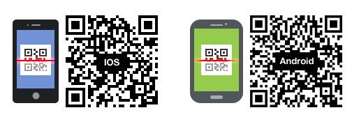

Visão geral
O Cloud Station para Synology NAS é um aplicativo de sincronização de arquivos que permite que você sincronize facilmente os arquivos em seu Synology NAS com outros dispositivos, tais como computadores ou dispositivos móveis (com o DS cloud). Instale o Cloud Station Server em seu Synology NAS e o Cloud Station Drive em seu computador para sincronizar automaticamente os arquivos armazenados em seu computador com seu Synology NAS.
Configure a conexão entre o Synology NAS e o computador
- Vá para Centro de pacotes, encontre o Cloud Station Server e em seguida clique em Instalar.
- Abra o Cloud Station Server.
- Na guia Visão geral, clique no botão sob Cloud Station Drive para baixar o Cloud Station Drive para o seu sistema operacional. (Você também pode baixar o Cloud Station de Centro de Download Synology.)
- Abra o instalador de seu computador e siga as instruções na tela.
- Após a instalação, execute o Cloud Station em seu computador. Clique em Iniciar Agora.
- Digite o endereço do Synology NAS executando o Cloud Station (ou QuickConnect ID), nome de usuário e senha. Você pode clicar no ícone de pesquisa à direita para pesquisar os IPs dentro de sua LAN. Clique em Avançar.
- Selecione as pasta que deseja sincronizar em seu Synology NAS e no seu computador clicando no ícone Editar. Você pode então clicar em Avançado para ajustar as configurações de sincronização
- Desmarque qualquer pasta que não deseje sincronizar.
- Defina o tamanho máximo do arquivo ou nomes de arquivo da lista negra ou tipos de arquivos para que não sejam sincronizados.
- Selecione se deseja sincronizar bidirecionalmente ou apenas baixar os dados de seu Synology NAS.
- Clique em Concluído para completar a configuração.
- Você pode encontrar o ícone do Cloud Station na bandeja do seus sistema.
- Clique no ícone da bandeja do sistema para abrir o menu da bandeja. Aqui você pode visualizar o andamento e o status de seus arquivos. Aqui você pode visualizar o andamento e o status de seus arquivos. Clique em Aplicativo principal para abrir o Cloud Station.
- Na abertura, o sistema mostrará algumas dicas sobre como usar o Cloud Station. Clique na seta para a direita para ver mais dicas ou clique em Tutoriais on-line para obter mais informações. Se não precisar de dicas, marque a caixa ao lado de Não mostrar isso novamente.
- Agora você pode gerenciar suas tarefas de sincronização no Cloud Station Drive.


Baixe uma versão anterior de um arquivo sincronizado
- Clique no ícone Cloud Station Drive na bandeja do seu sistema e no ícone da pasta.
- Clique com o botão direito no arquivo selecionado e escolha Synology Cloud Station > Procurar versões anteriores.
- Localize a versão que deseja baixar e clique no ícone de download.


Baixar ou restaurar uma versão anterior de um arquivo sincronizado no Cloud Station Server
- Vá para Cloud Station Server > Histórico de versões e localize o arquivo ou a pasta que deseja restaurar.
- Selecione o arquivo que deseja recuperar e clique em Ação > Procurar versões anteriores.
- Selecione a versão do arquivo que deseja baixar e clique em Download. Ou, se você tem certeza de que quer a versão selecionada restaurada, clique em Restaurar e ela substituirá a versão atual.


Observações importantes
- Sempre mantenha versões históricas no caso de um arquivo ser removido ou substituído por acidente.
- Em Configurações globais, você pode configurar se um arquivo será buscado novamente em seu NAS ou excluído em seu NAS quando você excluir um arquivo do computador.
Sincronização de dados com seus dispositivos móveis
O DS cloud está disponível grátis na Apple App Store e Google Play Store. Também é possível escanear o código QR abaixo para baixar diretamente.
